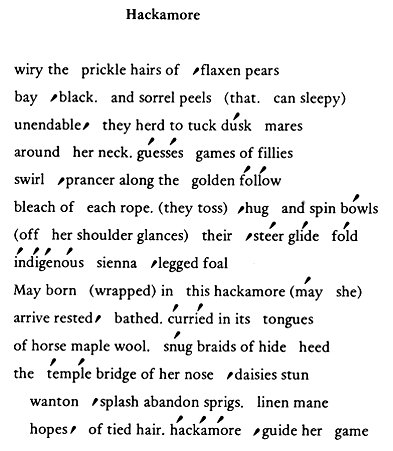

|
* Hackamore: A halter-like device used to guide the horse. The hackamore was developed for humanitarian reasons, as it fits over the horse's nose, as opposed to a bit, which rests inside the mouth. The hackamore gently guides the horse by exerting pressure under the chin. It was widely used by the Native American, and could be very decorative, with reins woven out of various colors of horsehair. |
read the author's Bio and Working Notes go to Black and Orange, Pumpkin, or Celeriac go to this issue's table of contents
 Jacqueline Quinn
Jacqueline Quinn